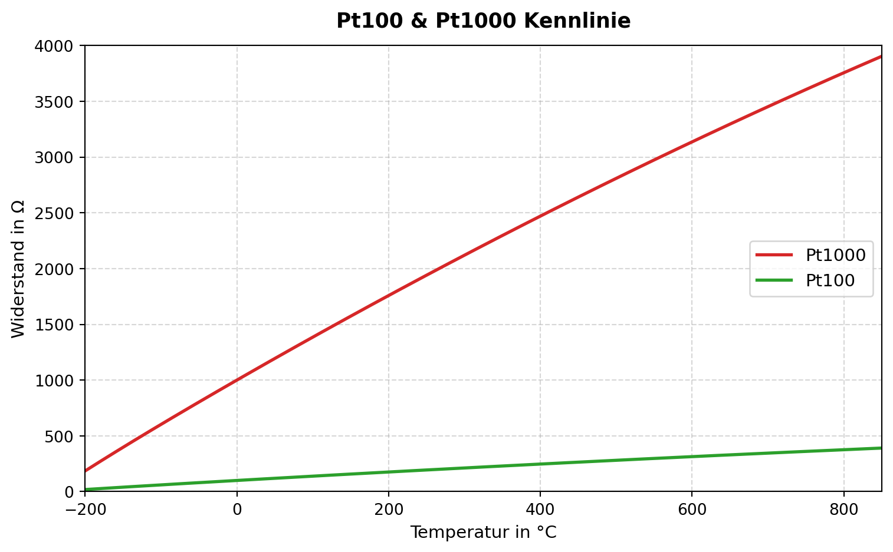
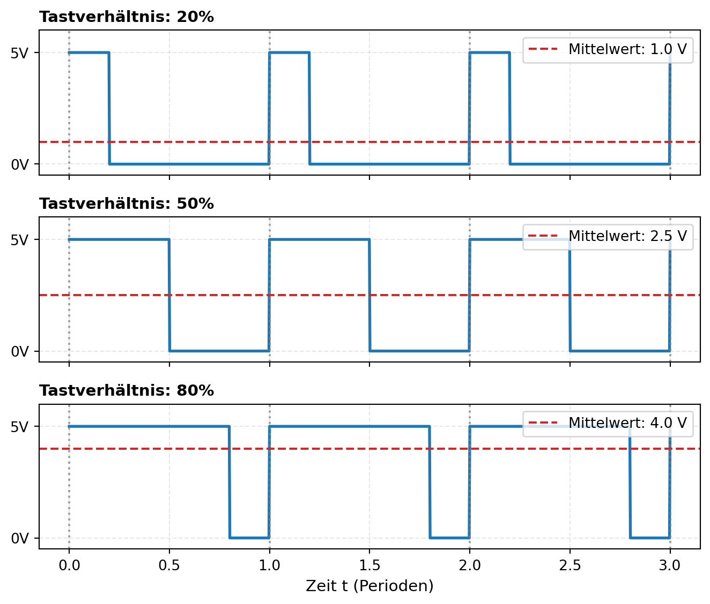

Erste Ansteuerungen
Nachdem nun die Grundlagen des 3D-Drucks recherchiert und verstanden wurden, konnte sich an die Bauteilanalyse sowie Ansteuerung erster entscheidener Komponenten mittels Python gemacht werden. Im Ersten Schritt wurde sich hierbei um die Grundkomponenten eines 3D-Druckers beschäftigt. Die nachfolgenden Unterkapitel werden näher auf die Vorgehensweise und die daraus entstehenden Erkenntnisse eingehen. Alle erwähnten Codes sowie Datenblätter und ergänzende Dokumentation sind dem Github zu entnehmen.
Grundkomponenten eines 3D-Druckers
Um einen 3D-Drucker Funktionsfähig zu machen braucht es prinzipiell drei verschiedene Baugruppen. Diese drei existenziellen Baugruppen sind:
- Step-Motoren: Steuern die horizontale sowie vertikale Bewegung des Druckkopfes über die X-/Y-/Z-Achse sowie die Steuerung des Filamentausschubs über den Extruder.
- Endschalter: Kommunikation mit den Step-Motoren ob ein Ende der Achsen erreicht wurde, um die Bewegung zu stoppen sowie die Position zu kalibrieren.
- Heizkomponenten: Erwärmung des Filaments im Hotend sowie bei Bedarf des Heatbeds.
Somit wurde sich zuerst dran gemacht diese Baugruppen zu verstehen und sie anschließend mit Hilfe von Python anzusteuern.
Step-Motoren
Sogut wie alle in modernen 3D-Drucker verbauten Step-Motoren funktionieren identisch. Es gibt vier Adern, welche an vier verschiedene im Motor sitzende Kontakte geführt werden. Diese Kontakte sind mit zwei von einander getrennten Spulen verbunden, welche bei Stromfluss ein Magnetfeld erzeugen. Dieses Magnetfeld sorgt dafür, dass sich der Rotor des Motors in eine bestimmte Position dreht. Somit lässt sich der Motor sehr präzise und gezielt kontrollieren. Sind die Positionen bzw. Winkel in korrelation mit den Kontakten bekannt, kann mit dem Motor eine Rotationsbewegung durchgeführt werden. Die Nachfolgende Abbildung 1 zeigt den internen Aufbau dieser Step-Motoren in Verbindung mit den Steuerkontakten, oft als A+/A-/B+/B-, A1/A2/B1/B2 oder A/B/C/D bezeichnet. Neben der Schaltung ist in der Abbildung 1 (b) die Reihenfolge der Ansteuerung dargestellt.


Nun wurde anhand dieser Erkenntnisse versucht diese Motoren anzusteuern. Da jedoch ein Raspberry Pi nicht direkt den Strom bei der anzuliegenden Spannung bereitstellen kann, muss ein Motortreiber zwischen geschaltet werden. Für diesen Versuch wurde ein L298N Dual H-Bridge Motor Driver verwendet, da er bereits verfügbar war. Dieser Treiber hat passend zu den vier Kontakten des Motors ebenfalls vier Anschlüsse, welche ein Steuersignal vom Raspberry Pi 5 entgegennehmen und den Motor ansteuern. Somit konnte der Motor über die GPIO-Pins des Raspberry Pi 5 angesteuert werden. Ein kleines Skript in Python (4_wire_step.py) wurde geschrieben, welches die Ansteuerung der Kontakte in der in Abbildung 1 (b) zu sehende Reihenfolge ansteuert. Zur Drehrichtungsänderung muss die Reihenfolge der Kontakte invertiert umsetzen. Um nun präzise einzelne Steps durchführen zu können, wurde ein Counter eingebaut, welcher die Anzahl der Ansteuerungen mitzählt. Somit kann der Motor gezielt um eine bestimmte Anzahl an Steps gedreht werden. Die Geswchwindigkeitsänderung des Motors kann über die Zeitabstände der Ansteuerung der Kontakte geregelt werden.
Endschalter
Ein Endschalter ist nichts weiteres als ein Handelsüblicher Taster, welcher bei Kontakt einen Normally Closed zu einem Normally Opend oder einen Normally Opend zu einem Normally Closed verändert. Es gibt bei physischen Endschaltern meist drei Adern, welche einen gemeinsamen Spannungs- bzw. Ground-Kontakt, ein NO-Kontakt und einen NC-Kontakt beinhalten. Wird nun der Schalter gedrückt wird die angeschlossene Spannung bzw. der angeschlossene Ground weitergegeben oder unterbrochen, was eine Zustandsänderung für das anliegende Signal bedeutet. Diese Zustandsänderung lässt sich nun in Bezug auf z.B. die Motoren setzen.
Auch hier wurde nun ein kleines einzelnes Skript in Python (limit_switch.py) geschrieben, welches die Funktion des Endschalters testet und validiert. Außerdem wurde in die Funktion den Step-Motors ein Endschalter mit eingebaut, womit der Motor bei Bedarf gestoppt werden konnte.
Heizkomponenten
Die Heizelemente an sich sind wohl die am einfachsten anzusteuerden Bauteile in dieser Liste, da sie bei einer anliegenden Spannung Wärme erzeugen. Hier ist eine Spule in ein Material eingearbeitet, z.B. in das Hotend oder Heatbed des Druckers, welche sich bei Stromfluss erwärmt. Neben den Heizelementen bedarf es jedoch noch mindestens noch ein Temperatursensor, welcher die Temperatur überwacht und als Heizstopp fungiert. Diese Temperatursensoren können als NTC (Heißleiter) oder PTC (Kaltleiter) umgesetzt werden. Am beliebtesten ist hier jedoch der PTC in Verbindung mit Platin, da diese PT100 bzw. PT1000 Glieder einen sehr linearen Kurvenverlauf aufweisen. Außerdem sind sie so optimiert, dass sie bei einer Temperatur von \(T=0\,°C\) genau einen Widerstand von \(R_{PT100}=100\,\Omega\) bzw. \(R_{PT1000}=1000\,\Omega\) ausgeben. Sie sind somit sehr gut für die Temperaturmessung geeignet. Die Abbildung 4 zeigt einen Kurvenverlauf der beiden Temperatursensoren.
Neben den Temperatursensoren sind außerdem noch Lüfter von Vorteil um das Bauteil wieder abzukühlen bzw. die benötigte Temperatur zu halten und nicht zu überschreiten. Standatisierte Lüfter beim 3D-Druck können mit bis zu 24V über ein PWM-Signal betrieben werden. So wird über die Pulsbreite der Signale die Spannung festgelegt. Als Beipiel kann man einen \(5\,\text{V}\) Lüfter in Verbindung mit einer maximalen Signalspannung von \(V_{sig}=5\,\text{V}\) nehmen. Dieses kontinuierliche \(5\,\text{V}\) Spannungssignal entspricht für den Lüfter eine Leistung am Ausgang von \(P_{max}=100\,\%\). Wird nun mithilfe der Pulsweitenmodulation das Signal auf \(50\,\%\) reduziert, das heißt es wird kein Dauerimpuls gesendet sondern ein Impuls mit einer Pulsbreite von \(t_{an}=50\,\%\) gesendet, so wird die Spannung auf \(V_{sig}=2,5\,\text{V}\) reduziert und der Lüfter läuft nur noch mit \(P=50\,\%\). Somit kann die Leistung des Lüfters über das PWM-Signal geregelt werden. Die Abbildung 5 zeigt die entstehende Signalspannung bei unterschiedlichen PWM-Signalen.




Referenzsystem: Geeetech i3
Nach Ansteuerung der einzelnen Basiskomponenten wurde nun probiert mittels eines Referenzdruckers die Bauteile anzusteuern. Dazu wurde ein ausgesonderter Geeetech i3 3D-Drucker verwendet, welcher hardwareseitig über einen Arduino Mega 2560 betrieben wird. Die Abbildung 6 zeigt das Referenzsystem.

Software Festlegung
Da bereits der Arduino sowie der Raspberry Pi 5 zur Verfügung standen, wurde sich nun auf die Lösung der Ansteuerung mittels zwei Boards und gegen die FPGA Lösung entschieden. Somit sollte der Arduino als Hardwaresteuerung und der Raspberry Pi 5 für die komplexere Softwaresteuerung verantwortlich sein. Für diese Art von Ansteuerung gibt es bereits sämtliche Open-Source Lösungen. Unter anderem Klipper, Marlin, RRF (RepRapFirmware) oder auch Kalico. Die meist verbreitete und zugängliste Variante ist hier Klipper. Kipper bietet mit der in Python Programmierten Funktionsklassen leichte Anpassungs- sowie Erweiterungsmöglichkeiten und für sehr viele Lösungen bereits vorgefertigte Module. Außerdem kann mit Hilfe von Mainsail und Moonraker leicht eine IP-Adressen basierte Benutzeroberfläche für Klipper geschaffen werden, mit welcher sich alle Komponenten steuern und Änderungen im Code vorgenommen werden können. Neben dieser Weboberfläche kann zusätzlich mit Crowsnest eine Kamera eingebunden und mit Kipper-Screen diese Weboberfläche auch auf dem am Raspberry Pi angeschlossenen Displays angezeigt werden. Zusätzlich können über G-Code direkt in der Weboberfläche Makros erstellt werden, welche die Ansteuerung der einzelnen Komponenten vereinfachen oder z.B. eine Startsequenz für den Drucker erstellt. Alle benötigten Module sind einfach über deren eigenen Github-Repositories direkt aus der Konsole des Raspberry Pi’s zu installieren und zu konfigurieren. Somit bietet Klipper alles für die erfolgreiche Umsetzung des Projektes.
Ansteuerung des Referenzsystems
Die Ansteuerung des Referenzsystems gestaltete sich mithilfe von Klipper und den bereits vorhandenen Modulen sowie der vorherigen Recherche der einzelnen Komponenten recht leicht. Als MCU für das Referenzsystem wurde ein Arduino Mega 2560 mit einem RAMPS 1.4 Board verwendet, welches bereits die benötigten Anschlüsse für die Step-Motoren, Endschalter und Heizkomponenten bereitstellt. Die Ansteuerung der einzelnen Komponenten wurde in der Konfigurationsdatei von Klipper hinterlegt. Um nun eine Verbindung zwischen dem Raspberry Pi 5 und dem Arduino herzustellen musste der Arduino zuerst mit der Klipper-Firmware geflasht werden. Dies geschieht über die Konsole des Raspberry Pi’s und dem Befehl makeconfig in dem Klipper-Ordner. Hierbei wird die Konfiguration des Arduinos erstellt und anschließend mit dem Befehl make flash auf den Arduino über ein USB-Kabel übertragen. Die anschließende Verbindung zwischen dem Raspberry Pi 5 und dem Arduino wird ebenfalls über die USB-Schnittstelle hergestellt.
Beim Betreten des Webinterfaces von Mainsail kann der Drucker über die IP-Adresse des Raspberry Pi’s aufgerufen und dort auch die einzelnen Komponenten angesteuert werden. Bevor jedoch die Komponenten angesteuert werden konnten musste zuerst die Konfiguration des Druckers in der printer.cfg Datei von Klipper hinterlegt werden. Hierbei wurden die einzelnen Anschlüsse der Step-Motoren, Endschalter und Heizkomponenten hinterlegt. Diese Pinbelegungen konnten aus den Datenblättern des Arduinos sowie des RAMPS 1.4 Boards entnommen werden. Außerdem wurden die einzelnen Parameter der Step-Motoren, Endschalter und Heizkomponenten in der Konfigurationsdatei hinterlegt. Diese Parameter konnten aus den Datenblättern der einzelnen Komponenten entnommen werden. Nach erfolgreicher Konfiguration konnte der Drucker über das Webinterface von Mainsail angesteuert werden. Für weiter Tests wurde mittels Crowsnest eine Kamera an den Raspberry Pi 5 angeschlossen, um die Ansteuerung der einzelnen Komponenten zu überwachen. Außerdem wurde ein kleines Display an den Raspberry Pi 5 angeschlossen, um die Weboberfläche von Mainsail auch auf dem Display anzeigen zu können. Somit konnte der Drucker auch ohne einen Computer angesteuert werden. Die dafür benötigten Dateien konnten direkt in der Webobefläche von Mainsail erstellt, bearbeitet und auf dem Raspberry Pi 5 gespeichert werden. die Abbildung 7 (a) zeigt die Weboberfläche von Mainsail und Abbildung 7 (b) zeigt den finalen Aufbau des Referenzsystems.